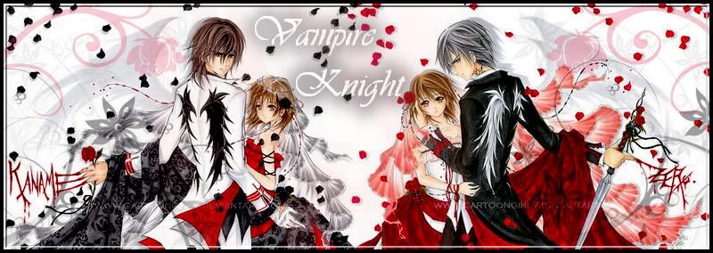
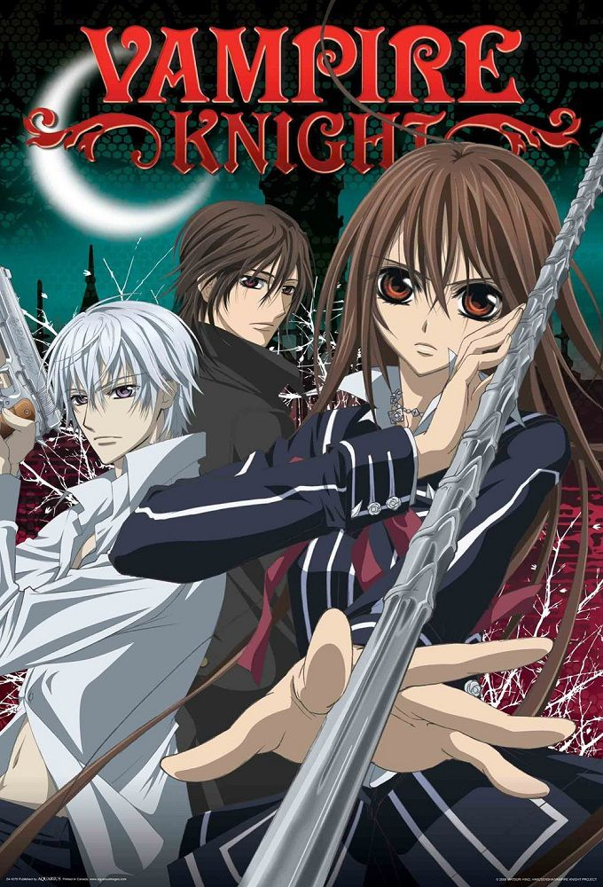

Vampire Knight

Fiche descriptive:
Nom: Vampire Kinight
Type: shojo
Studio d'animation: DEEN
Disponibe sur Netflix
Nombre d'épisodes: 2 saissons de 13 épisodes
Résumé:
Ce shojo met en scène une histoire d’amour classique impossible entre l’héroïne et deux prétendant potentiel.
Yuki Cross est élève en 1ère année de la Day Class et chargée de discipline à l’académie Cross.
En compagnie de Zéro Kiryu, ils surveillent les élèves de la Night Class,
un groupe d’élite composé uniquement de vampires. La coexistence est parfois difficile,
l’odeur du sang excitant les vampires d’autant qu’ils sont les seuls avec le directeur à connaître ce secret.
Avis:
Vampire Knight est un bon animé à ne pas rater.
En effet avec un oppening du groupe ON/OFF Vampire Knight nous fait découvrir une histoire originale,
mêlant romance et suspens sur les vampires,
dans une ambiance gothique, avec de bonnes musiques et une histoire qui tient en haleine.
Les personnages sont très classiques non sans charmes et mystères, les dessins sont très bien et très soigné.
Certes l’histoire reste centrée sur notre héroïne Yuki Cross,
face à ses sentiments pour les garçons qui l’entourent mais rien ne semble facile pour elle car ceux-ci ont pas mal de secrets cachés et un passé mouvementé…
